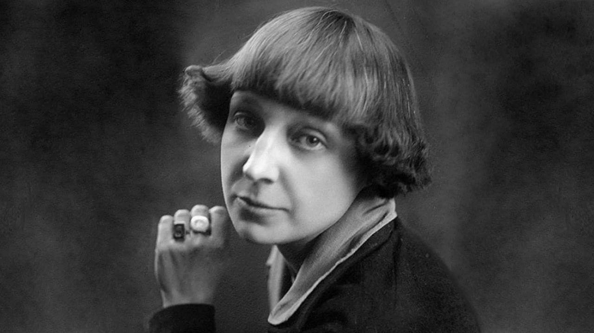

💫 Оживи фото за 1–3 клика
Оживи и улучшай фото как в студии
Анимация лица, повышение чёткости, ИИ-фотошоп, восстановление старых фотографий и фото со звёздами — всё в одном Telegram-боте.
- ✨ Без регистрации
- ⚡ Результат за минуты
- 💎 Фокус на качестве лиц



*Положи в корень репозитория файлы before.jpg (до) и after.gif (после).